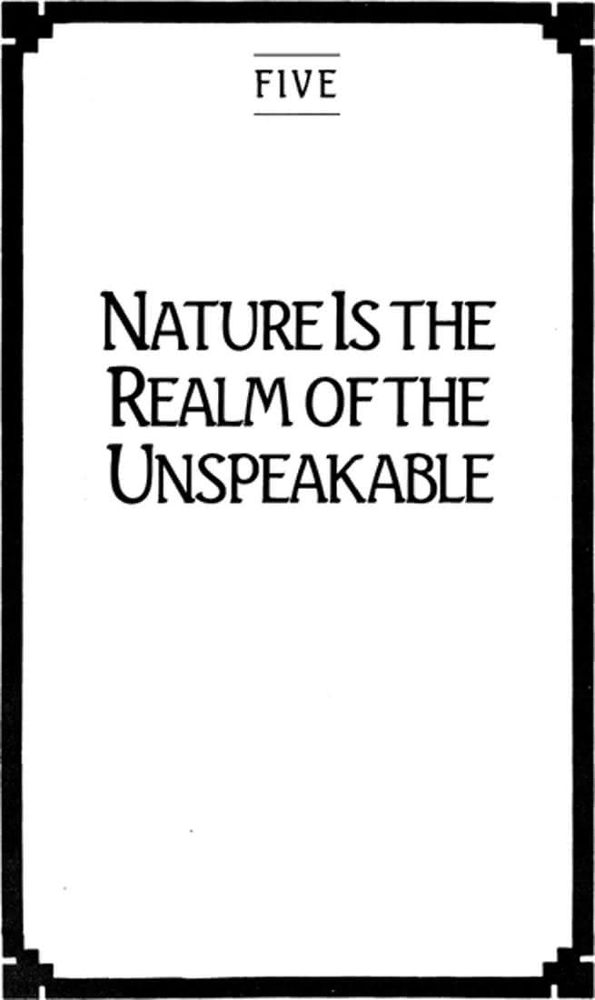

Chapter Five: Nature Is the Realm of the Unspeakable

70
NATURE IS the realm of the unspeakable. It has no voice of its own, and nothing to say. We experience the unspeakability of nature as its utter indifference to human culture.
The Master Player in us tolerates this indifference scarcely at all. Indeed, we respond to it as a challenge, an invitation to confrontation and struggle. If nature will offer us no home, offer us nothing at all, we will then clear and arrange a space for ourselves. We take nature on as an opponent to be subdued for the sake of civilization. We count among the highest achievements of modern society the development of a technology that allows us to master nature’s vagaries.
The effort has largely taken the form of theatricalizing our relation to nature. Like any Master Player we have been patiently attentive to the slightest clues in our opponent’s behavior—as a way of preparing ourselves against surprise. Like hunters stalking their prey, we have learned to mimic the movements of nature, waiting for the chance to take hold of them before they get away from us. “Nature, to be commanded, must be obeyed” (Bacon). It is as though, by learning its secret script, we have learned to direct its play as well. There is little left to surprise us.
The assumption guiding our struggle against nature is that deep within itself nature contains a structure, an order, that is ultimately intelligible to the human understanding. Since this inherent structure determines the way things change, and is not itself subject to change, we speak of nature being lawful, of repeating itself according to quite predictable patterns.
What we have done by showing that certain events repeat themselves according to known laws is to explain them. Explanation is the mode of discourse in which we show why matters must be as they are. All laws made use of in explanation look backward in time from the conclusion or the completion of a sequence. It is implicit in all explanatory discourse that just as there is a discoverable necessity in the outcome of past events, there is a discoverable necessity in future events. What can be explained can also be predicted, if one knows the initial events and the laws covering their succession. A prediction is but an explanation in advance.
Because of its thorough lawfulness nature has no genius of its own. On the contrary, it is sometimes thought that the grandest discovery of the human genius is the perfect compatibility between the structure of the natural order and the structure of the mind, thereby making a complete understanding of nature possible. “One may say ‘the eternal mystery of the world is its comprehensibility’” (Einstein).
This is as much as to say that nature does have a voice, and its voice is no different from our own. We can then presume to speak for the unspeakable.
This achievement is often raised as a sign of the great superiority of modern civilization over the many faded and lost civilizations of the ancients. While our great skill lies in finding patterns of repetition under the apparent play of accident and chance, less successful civilizations dealt with the threats of natural accident by appealing to supernatural powers for protection. But the voices of the gods proved to be ignorant and false; they have been silenced by the truth.
71
There is an irony in our silencing of the gods. By presuming to speak for the unspeakable, by hearing our own voice as the voice of nature, we have had to step outside the circle of nature. It is one thing for physics and chemistry to be speaking about nature; it is quite another for physics and chemistry to be the speaking of nature. No chemist would want to say that chemistry is itself chemical, for our speaking cannot be both chemical and about chemistry. If speaking about a process is itself part of the process, there is something that must remain permanently hidden from the speaker. To be intelligible at all, we must claim that we can step aside from the process and comment on it “objectively” and “dispassionately,” without anything obstructing our view of these matters. Here lies the irony: By way of this perfectly reasonable claim the gods have stolen back into our struggle with nature. By depriving the gods of their own voices, the gods have taken ours. It is we who speak as supernatural intelligences and powers, masters of the forces of nature.
This irony passes unnoticed only so long as we continue to veil ourselves against what we can otherwise plainly see: nature allows no master over itself. Bacon’s principle works both ways. If we must obey to command, then our commanding is only obeying and not commanding at all. There is no such thing as an unnatural act. Nothing can be done to or against nature, much less outside it. Therefore, the ignorance we thought we could avoid by an unclouded observation of nature has swept us back into itself. What we thought we read in nature we discover we have read into nature. “We have to remember that what we observe is not nature in itself but nature exposed to our method of questioning” (Heisenberg).
72
We are speaking now of no ordinary ignorance. It is not what we could have known but do not; it is unintelligibility itself: that which no mind can ever comprehend.
Unveiled, aware of the insuperable limitation placed against all our looking, we come back to nature’s perfect silence. Now we can see that it is a silence so complete there is no way of knowing what it is silent about—if anything. What we learn from this silence is the unlikeness between nature and whatever we could think or say about it. But this silence has an irony of its own: Far from stupefying us, it provides an indispensable condition to the mind’s own originality. By confronting us with radical unlikeness, nature becomes the source of metaphor.
Metaphor is the joining of like to unlike such that one can never become the other. Metaphor requires an irreducibility, an imperturbable indifference of its terms for one another. The falcon can be the “kingdom of daylight’s dauphin” only if the daylight could have no dauphin, could indeed have nothing to do with dauphins.
At its root all language has the character of metaphor, because no matter what it intends to be about it remains language, and remains absolutely unlike whatever it is about. This means that we can never have the falcon, only the word “falcon.” To say that we have the falcon, and not the “falcon,” is to presume again that we know precisely what it is we have, that we can see it in its entirety, and that we can speak as nature itself.
The unspeakability of nature is the very possibility of language.
Our attempt to take control of nature, to be Master Player in our opposition to it, is an attempt to rid ourselves of language. It is the refusal to accept nature as “nature.” It is to deafen ourselves to metaphor, and to make nature into something so familiar it is essentially an extension of our willing and speaking. What the hunter kills is not the deer, but the metaphor of the deer—the “deer.” Killing the deer is not an act against nature; it is an act against language. To kill is to impose a silence that remains a silence. It is the reduction of an unpredictable vitality to a predictable mass, the transformation of the remote into the familiar. It is to rid oneself of the need to attend to its otherness.
The physicists who look at their objects within their limitations teach physics; those who see the limitations they place around their objects teach “physics.” For them physics is a poiesis.
73
If nature is the realm of the unspeakable, history is the realm of the speakable. Indeed, no speaking is possible that is not itself historical. Students of history, like students of nature, often believe they can find unbiased, direct views of events. They look in on the lives of others, noting the multitude of ways those lives have been limited by the age in which they were lived. But no one can look in on an age, even if it is one’s own age, without looking out of an age as well. There is no refuge outside history for such viewers, any more than there is a vantage outside nature.
Since history is the drama of genius, its relentless surprise tempts us into designing boundaries for it, searching through it for patterns of repetition. Historians sometimes speak of trends, of cycles, of currents, of forces, as though they were describing natural events. In doing so they must dehistoricize themselves, taking a perspective from the timeless, believing that each observed history is always of others and never of themselves, that each observation is of history but not itself historical.
Genuine historians therefore reverse the assumption of the observers of nature that the observation itself cannot be an act of nature. Historians who understand themselves to be historical abandon explanation altogether. The mode of discourse appropriate to such self-aware history is narrative.
Like explanation, narrative is concerned with a sequence of events and brings its tale to a conclusion. However, there is no general law that makes this outcome necessary. In a genuine story there is no law that makes any act necessary. Explanations place all apparent possibilities into the context of the necessary; stories set all necessities into the context of the possible.
Explanation can tolerate a degree of chance, but it cannot comprehend freedom at all. We explain nothing when we say that persons do whatever they do because they choose to do it. On the other hand, causation cannot find a place in narrative. We have not told a story when we show that persons do whatever they do because they were caused to do it—by their genes, their social circumstances, or the influence of the gods.
Explanations settle issues, showing that matters must end as they have. Narratives raise issues, showing that matters do not end as they must but as they do. Explanation sets the need for further inquiry aside; narrative invites us to rethink what we thought we knew.
If the silence of nature is the possibility of language, language is the possibility of history.
74
Successful explanations do not draw attention to themselves as modes of speaking, because what is explained is not itself subject to history. If I explain to you why cold water sinks to the bottom of the pond and ice rises to the surface, I certainly do not intend my explanation to be true now and not later. The explanation is true anywhere and any time.
That I choose to explain this to you in this time and place, however, is historical; it is an event—the narrative of our relation with each other. There must therefore be a reason for the speaking of this verity. Explanations are not offered gratuitiously, just because, say, ice happens to float. I can explain nothing to you unless I first draw your attention to patent inadequacies in your knowledge: discontinuities in the relations between objects, or the presence of anomalies you cannot account for by any of the laws known to you. You will remain deaf to my explanations until you suspect yourself of falsehood.
Many of these suspicions are, of course, minor, requiring merely small adjustments in one’s views, incurring no doubt whatsoever concerning those views. Major challenges, however, are too serious to be met with argument, or with sharpened explanation. They call either for outright and wholesale rejection, or for conversion. One does not cross over from Manichaeism to Christianity, or from Lamarckianism to Darwinism, by a mere adjustment of views. True conversions consist in the choice of a new audience, that is, of a new world. All that was once familiar is now seen in startlingly new ways.
As theatrical as conversions are, they remain oblivious to the degree to which choice is involved in the passage from one world to another. Radical conversions, especially, veil themselves against their own arbitrariness. Augustine, the most famous convert of antiquity, was puzzled that he could have held so firmly to so many different falsehoods; he was not astounded that there are so many different truths. His conversion was not from explanation to narrative, but from one explanation to another. When he crossed the line from paganism to Christianity, he arrived in the territory of a truth beyond further challenge.
Explanations succeed only by convincing resistant hearers of their error. If you will not hear my explanations until you are suspicious of your own truths, you will not accept my explanations until you are convinced of your error. Explanation is an antagonistic encounter that succeeds by defeating an opponent. It possesses the same dynamic of resentment found in other finite play. I will press my explanations on you because I need to show that I do not live in the error that I think others think I do.
Whoever wins this struggle is privileged with the claim to true knowledge. Knowledge has been arrived at, it is the outcome of this engagement. Its winners have the uncontested power to make certain statements of fact. They are to be listened to. In those areas appropriate to the contests now concluded, winners possess a knowledge that no longer can be challenged.
Knowledge, therefore, is like property. It must be published, declared, or in some other way so displayed that others cannot but take account of it. It must stand in their way. It must be emblematic, pointing backward at its possessor’s competitive skill.
So close are knowledge and property that they are often thought to be continuous. Those who are entitled to knowledge feel they should be granted property as well, and those who are entitled to property believe a certain knowledge goes with it. Scholars demand higher salaries for their publishable successes; industrialists sit on university boards.
75
If explanation, to be successful, must be oblivious to the silence of nature, it must also in its success impose silence on its listeners. Imposed silence is the first consequence of the Master Player’s triumph.
What one wins in a title is the privilege of magisterial speech. The privilege of magisterial speech is the highest honor attaching to any title. We expect the first act of a winner to be a speech. The first act of the loser may also be a speech, but it will be a speech to concede victory, to declare there will be no further challenge to the winner. It is a speech that promises to silence the loser’s voice.
The silence to which the losers pledge themselves is the silence of obedience. Losers have nothing to say; nor have they an audience who would listen. The vanquished are effectively of one will with the victors, and of one mind; they are completely incapable of opposition, and therefore without any otherness whatsoever.
The victorious do not speak with the defeated; they speak for the defeated. Husbands speak for wives in the finite family, and parents for their children. Kings speak for the realm, governors for the state, popes for the church. Indeed, the titled, as titled, cannot speak with anyone.
It is chiefly in magisterial speech that the power of winners resides. To be powerful is to have one’s words obeyed. It is only by magisterial speech that the emblematic property of winners can be safeguarded. Those entitled to their possessions have the privilege of calling the police, calling up an army, to force the recognition of their emblems.
The power of gods is known principally through their utterances. The sicut dixit dominus (thus says the lord) is always a signal for ritual silence. The speech of a god can be so perfectly expressive of that god’s power that the god and its speech become identical: “In the beginning was the word. The word was with God, and the word was God.”
One is speechless before a god, or silent before a winner, because it no longer matters to others what one has to say. To lose a contest is to become obedient; to become obedient is to lose one’s listeners. The silence of obedience is an unheard silence. It is the silence of death. For this reason the demand for obedience is inherently evil.
The silence of nature is the possibility of language. By subduing nature the gods give it their own voice, but in making nature an opponent they make all their listeners opponents. By refusing the silence of nature they demand the silence of obedience. The unspeakability of nature is therefore transformed into the unspeakability of language itself.
76
Infinite speech is that mode of discourse that consistently reminds us of the unspeakability of nature. It bears no claim to truth, originating from nothing but the genius of the speaker. Infinite speech is therefore not about anything; it is always to someone. It is not command, but address. It belongs entirely to the speakable.
That language is not about anything gives it its status as metaphor. Metaphor does not point at something there. Never shall we find the kingdom of daylight’s dauphin in one place or another. It is not the role of metaphor to draw our sight to what is there, but to draw our vision toward what is not there and, indeed, cannot be anywhere. Metaphor is horizonal, reminding us that it is one’s vision that is limited, and not what one is viewing.
The meaning of a finite speaker’s discourse lies in what precedes its utterance, what is already the case and therefore is the case whether or not it is spoken.
The meaning of an infinite speaker’s discourse lies in what comes of its utterance—that is, whatever is the case because it is spoken.
Finite language exists complete before it is spoken. There is first a language—then we learn to speak it. Infinite language exists only as it is spoken. There is first a language—when we learn to speak it. It is in this sense that infinite discourse always arises from a perfect silence.
Finite speakers come to speech with their voices already trained and rehearsed. They must know what they are doing with the language before they can speak it. Infinite speakers must wait to see what is done with their language by the listeners before they can know what they have said. Infinite speech does not expect the hearer to see what is already known to the speaker, but to share a vision the speaker could not have had without the response of the listener.
Speaker and listener understand each other not because they have the same knowledge about something, and not because they have established a likeness of mind, but because they know “how to go on” with each other (Wittgenstein).
77
Because it is address, attending always on the response of the addressed, infinite speech has the form of listening. Infinite speech does not end in the obedient silence of the hearer, but continues by way of the attentive silence of the speaker. It is not a silence into which speech has died, but a silence from which speech is born.
Infinite speakers do not give voice to another, but receive it from another. Infinite speakers do not therefore appeal to a world as audience, do not speak before a world, but present themselves as an audience by way of talking with others. Finite speech informs another about the world—for the sake of being heard. Infinite speech forms a world about the other—for the sake of listening.
It is for this reason that the gods, insofar as they speak as the lords of this world, magisterially, speak before this world and are therefore unable to change it. Such gods cannot create a world but can only be creations of a world—can only be idols. A god cannot create a world and be magisterial within it. “The religions which represent divinity as commanding whenever it has the power to do so seem false. Even though they are monotheistic they are idolatrous” (Weil).
A god can create a world only by listening.
Were the gods to address us it would not be to bring us to silence through their speech, but to bring us to speech through their silence.
The contradiction of finite speech is that it must end by being heard. The paradox of infinite speech is that it continues only because it is a way of listening. Finite speech ends with a silence of closure. Infinite speech begins with a disclosure of silence.
78
Storytellers do not convert their listeners; they do not move them into the territory of a superior truth. Ignoring the issue of truth and falsehood altogether, they offer only vision. Storytelling is therefore not combative; it does not succeed or fail. A story cannot be obeyed. Instead of placing one body of knowledge against another, storytellers invite us to return from knowledge to thinking, from a bounded way of looking to an horizonal way of seeing.
Infinite speakers are Plato’s poietai taking their place in the historical. Storytellers enter the historical not when their speaking is full of anecdotes about actual persons, or when they appear as characters in their own tales, but when in their speaking we begin to see the narrative character of our lives. The stories they tell touch us. What we thought was an accidental sequence of experiences suddenly takes the dramatic shape of unresolved narrative.
There is no narrative without structure, or plot. In a great story this structure seems like fate, like an inescapable judgment descending on its still unaware heroes, a great metaphysical causality that crowds out all room for choice. Fate arises not as a limitation on our freedom, but as a manifestation of our freedom, testimony that choice is consequent. The exercise of your freedom cannot prevent the exercise of my own freedom, but it can determine the context in which I am to act freely. You cannot make choices for me, but you can largely determine what my choices will be about. Great stories explore the drama of this deeper touching of one free person by another. They are therefore genuinely sexual dramas astounding us once more with the magic of origins.
The myth of Oedipus is one of many great sexual narratives in the cultural treasury of the West that plays on the dramatic relation of fate and origin. Once Oedipus had impulsively killed Laius, not knowing he was his own father, he was carried ahead by ambition and lust into marriage with the dead man’s wife, unaware of her true identity. We can read this as fate or we can read it as one act of willfulness that leads to another. Oedipus has taken the posture of the Master Player executing terminal moves—but the moves are not terminal. Oedipus is able to bring nothing to an end. Even the act of blinding himself, meant as a kind of concluding gesture, only brings him to a higher vision. What Oedipus sees is not what the gods have done to him, but what he has done. He learns that what had been limited was his vision, and not what he was viewing. His blinding is an unveiling, and like all unveiling it is self-unveiling. Confronted in the end with nothing but his own genius, Oedipus is finally able to touch. The end of his story is a beginning.
What raises this story into the historical is not just that Oedipus sees; it is that we see that he sees. We become listeners who see that we are listening and therefore participating in a now enlarged drama of origins. Nothing is explained here. On the contrary, what we see is that everything remains still to be said.
79
There is a risk here of supposing that because we know our lives to have the character of narrative, we also know what that narrative is. If I were to know the full story of my life I would then have translated it back into explanation. It is as though I could stand as audience to myself, seeing the opening scene and the final scene at the same time, as though I could see my life in its entirety. In doing so I would be performing it, not living it.
Societal theorists are tempted into the belief that they know the story of a civilization. They can script its final scene of triumph or defeat. It is by way of such end-of-history thinking that the discovered laws of behavior to which persons conform become the scripted laws of behavior to which they must conform.
True storytellers do not know their own story. What they listen to in their poiesis is the disclosure that wherever there is closure there is the possibility of a new opening, that they do not die at the end, but in the course of play. Neither do they know anyone else’s story in its entirety. The primary work of historians is to open all cultural termini, to reveal continuity where we have assumed something has ended, to remind us that no one’s life, and no culture, can be known, as one would know a poiema, but only learned, as one would learn a poiesis.
Historians become infinite speakers when they see that whatever begins in freedom cannot end in necessity.